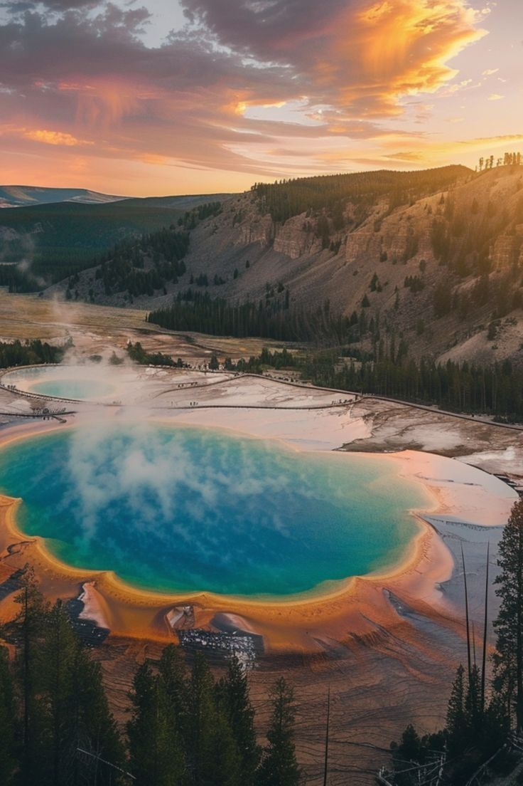
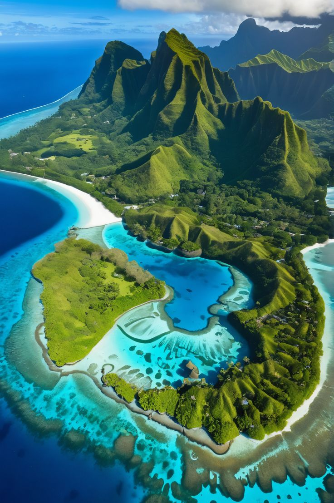
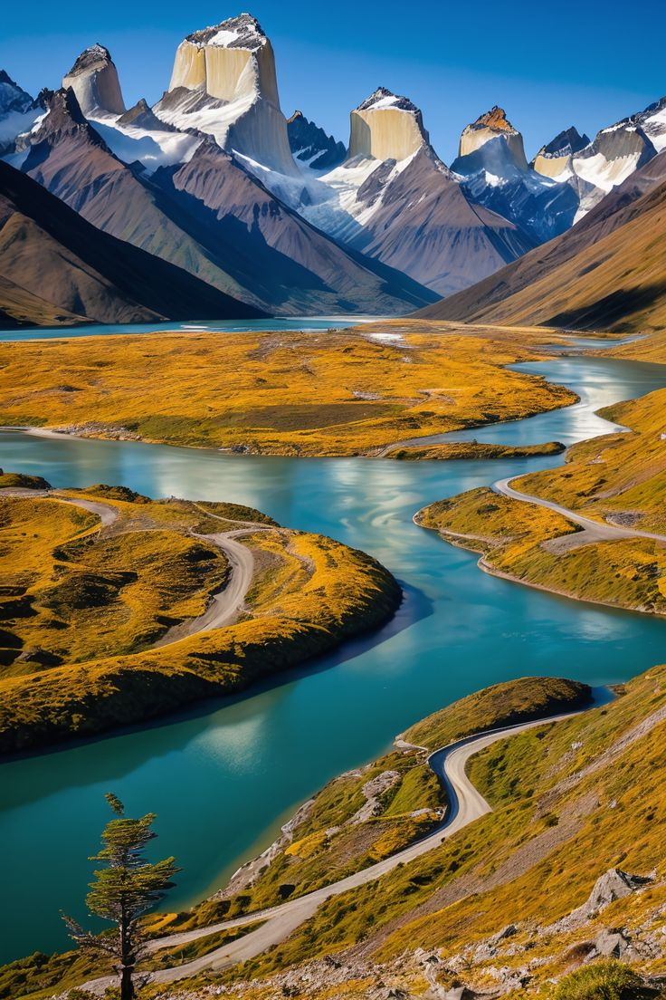

Parque Nacional de Yellowstone, EE. UU
Este parque es famoso por sus impresionantes géiseres, como el Old Faithful, y su diversidad de vida silvestre.
En 2025, podrías disfrutar de la belleza de sus paisajes, desde montañas hasta lagos, y participar en actividades al aire libre como senderismo y observación de animales.


Islas Galápagos, Ecuador
Este archipiélago es un paraíso para los amantes de la naturaleza.
En 2025, podrías explorar sus ecosistemas únicos y ver especies que no se encuentran en ningún otro lugar del mundo. Además, la conservación de estas islas es una prioridad, lo que significa que su belleza natural se mantendrá intacta.
Parque Nacional Torres del Paine, Chile
Con sus impresionantes montañas, glaciares y lagos, este parque es un destino de ensueño para los aventureros.
En 2025, podrías disfrutar de caminatas épicas y vistas panorámicas que te dejarán sin aliento. Además, la rica fauna y flora del lugar hacen que cada visita sea especial.
